Importing Material
In LemmaLoom, work begins by ingesting the content of your material into the project itself. Files, web pages, and recordings are all imported as documents. Then reading, coding, and analysis take place the same way for each type. Depending on your source, LemmaLoom automates varying degrees of processing before ingestion. A plain text file, for instance, comes in untouched. Importing a PDF document or a web page means that the text is automatically extracted for you by LemmaLoom. An audio or video document results in automatic transcription.
Ways to bring material in
| Material | Command | What the project keeps |
|---|---|---|
| Plain text files | File ▸ Import ▸ Documents (⇧⌘I) | The text |
| PDF files | File ▸ Import ▸ Documents (⇧⌘I) | The text of the pages |
| Web pages | File ▸ Import ▸ Web Pages (⌥⇧⌘I) | The text of the article |
| Audio and video files | File ▸ Import ▸ Documents (⇧⌘I) | A transcript, and a copy of the recording for playback |
| REFI-QDA projects and codebooks | File ▸ Import ▸ REFI-QDA Project or REFI-QDA Codebook | See Chapter 22, Exchanging and Exporting |
| LemmaLoom archives | File ▸ Import ▸ LemmaLoom Archive | See Chapter 22, Exchanging and Exporting |
| The example project | File ▸ Import ▸ Example Project | A new project, “Climate Debate”, already indexed |
| Attribute values in a spreadsheet | Import in the project’s Attributes window | Values for documents already in the project |
Use plain text in UTF-8 encoding whenever you can. With a plain text import, LemmaLoom keeps exactly what was typed. However, some of your material may come from a PDF-only source such as a published report. After importing your PDF, check whether your paragraphs got imported correctly. LemmaLoom can import web articles if it can access them without a login. When a web article is behind a sign-in, save a PDF using your browser and then import it. If you plan on playing a recording back while reading and coding it, import it directly into LemmaLoom. When playback isn’t important, a typed transcript may be imported as a plain text file.
REFI-QDA is the standard format used for exchange between LemmaLoom and other qualitative data analysis software packages. Use REFI-QDA for exchanging projects and codebooks.
You can also import files directly from the Finder. Double-click any .llz LemmaLoom archive file, .qdpx REFI-QDA project file, or .qdc REFI-QDA codebook file. Where they will end up depends on their content. A REFI-QDA project will always be added as a new project, and so will an archived project file. Codebooks and archive files of a set or of documents are added to whatever project is currently selected in the navigation sidebar at the time. Ensure your current selection is correct before importing.
Most examples provided in this guide are from “Climate Debate”. You can import the project using File ▸ Import ▸ Example Project. This project will arrive ready for use with full indexing already done, in the interface language. Most documents are plain text imports; specifically, the op-eds, columns, blog posts, and one speech are. The remainder is a PDF report, a news article taken from the internet, and a radio debate recording.
Each document must belong to only one project. The Documents and Web Pages menu options remain disabled until you select a project in the sidebar first. The Activity window provides the same two commands and also includes the menu showing the project’s name. See The Activity window in the latter half of this chapter.
LemmaLoom can generate translations based off existing documents within your project. Each generated translation will appear below its source document. As seen in “Climate Debate”, “Running Out of Time (German)” is listed beneath “Running Out of Time”. See Chapter 9, Translations and Split View. A translation you import from outside acts as a regular document.
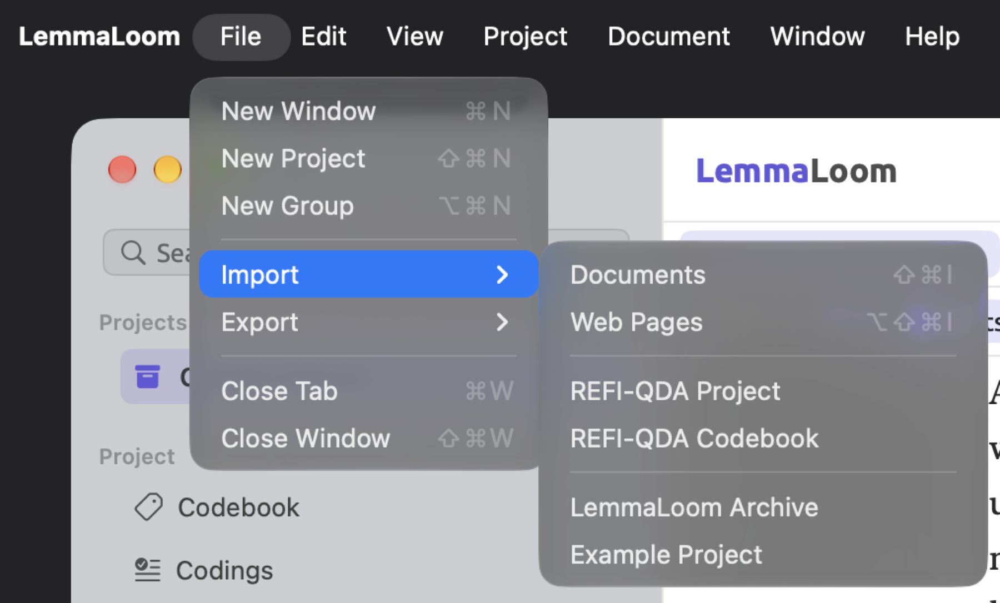
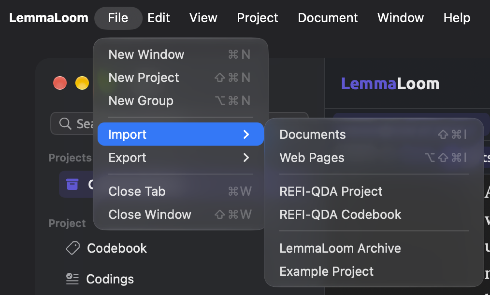
Key terms
- In an import dialog for a PDF or web page, there will always be a source preview at the top. This preview provides information about your source before it has been imported into LemmaLoom. The source preview can reveal issues, such as a wrong file or unreadable text, prior to importing.
- The text layer of a PDF contains actual readable text and not an image representation of the document’s pages. Many scans will lack this layer.
- Transcript is a term used in LemmaLoom to refer to the output text generated by LemmaLoom based on recordings or media items. Every transcription has many transcript segments, usually one sentence long, that correspond to specific points in time in media. Every passage in the transcript is tied to its respective place in media, and includes information such as the speaker, starting time point, and ending time point.
- Grammar analysis of your documents in LemmaLoom, called indexing, involves breaking down your text into sentences and tokens (words and punctuation marks), determining how those tokens depend on each other and group into phrases, and tagging tokens with their respective part-of-speech tags. New documents are indexed in the background upon import, unless you uncheck the Index for grammar analysis option when importing them. See After import later in this chapter.
- Analyzers look for specific linguistic features once indexing has finished, and annotate the passages they find. Two examples are Metadiscourse and Rhetoric.
Importing documents
Text files, PDFs, and recordings share the same command to bring them into LemmaLoom. Mixing all three file types is possible in one selection of your files. “Radio Debate” in the “Climate Debate” example comes from an audio file, whereas “Heat Wave Report 2024” comes from a PDF file. Meanwhile, the eleven commentaries in the example come from plain-text files.
To import documents:
- In the sidebar, select the project.
- Choose File ▸ Import ▸ Documents (⇧⌘I).
- Select the files and click Open.
- The Import Document dialog opens for the first file. Check the name and fill in whatever you know about the document (see The Import Document dialog below).
- Click Import. If you chose more than one file, the dialog opens again for the next one.
A counter displays in the top-right of your current dialog when importing multiple documents, displaying the position of the current file versus the total number to import. The counter displays 2 of 6, for instance. Skip skips the current document and loads the next in the queue, while Cancel cancels the current document and everything after it, then closes the dialog. Previously imported documents from the batch continue to live inside the project normally.
Work freely while imports occur since they run in the background. Imports of text documents populate the sidebar almost immediately, unlike others which show a progress row at the end of the Documents section until finished. A progress ring appears during an import process; if there is no percent completed display, as in some stages of processing a recording, the progress icon takes the form of a spinner. Hover the mouse pointer over a progress row to see the current stage of importation, e.g., Reading PDF or Transcribing speech. A percentage appears too if one is available.
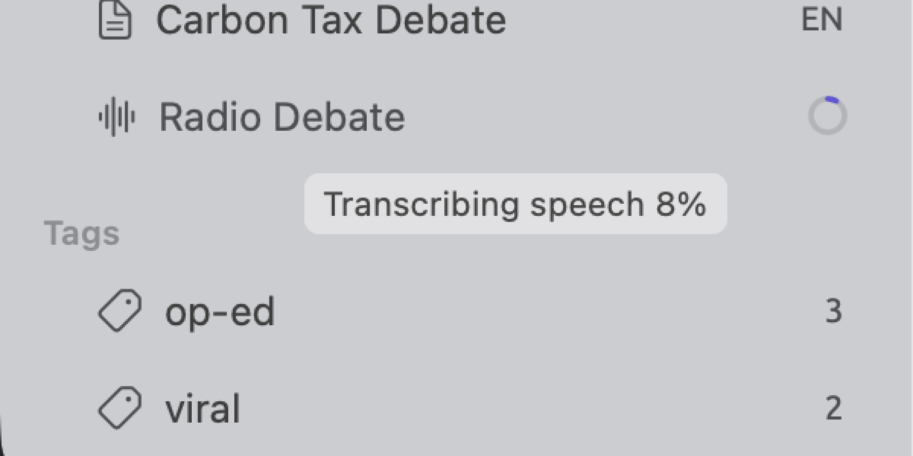
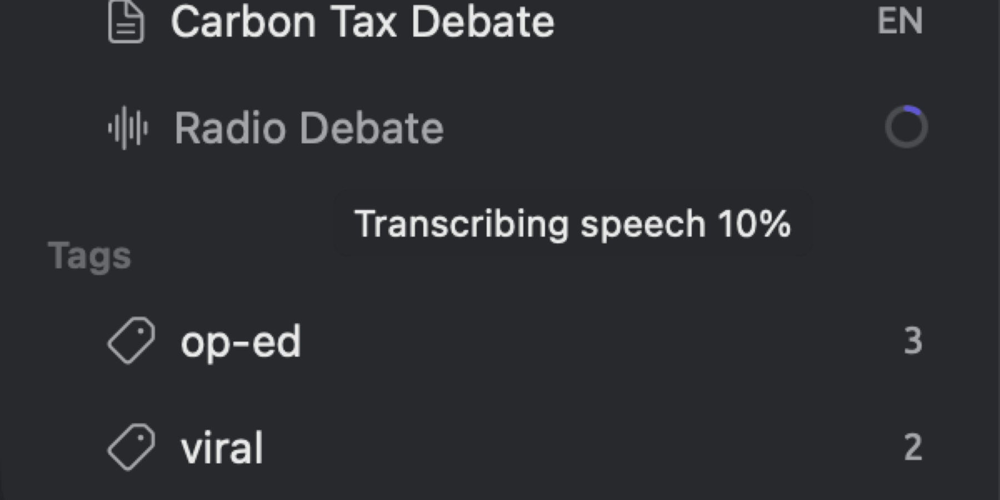
Imports execute in one-by-one order according to the sequence of your clicks on Import; thus a typed document confirmed after a lengthy recording is imported only after the recording’s transcription completes. Before attempting to import a recording, first import the typed documents you plan to work on immediately in LemmaLoom.
Quitting LemmaLoom terminates the currently executing import process along with those waiting behind it. Any document imported prior stays in the project normally, but those awaiting import must be reimported later. Closing the final window in LemmaLoom counts as quitting. Once imports commence, allow them to complete entirely without interruption.
Import operations terminate prematurely upon encountering errors. When this happens, a pop-up dialog titled Something went wrong informs you of the issue preventing the operation. LemmaLoom queues these error messages until the completion of all remaining dialogs within the current batch, then shows them together.
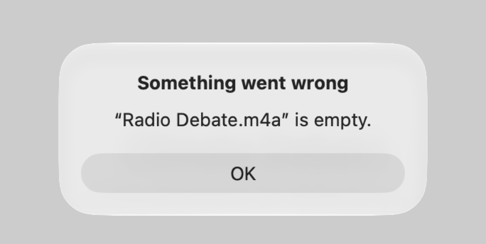
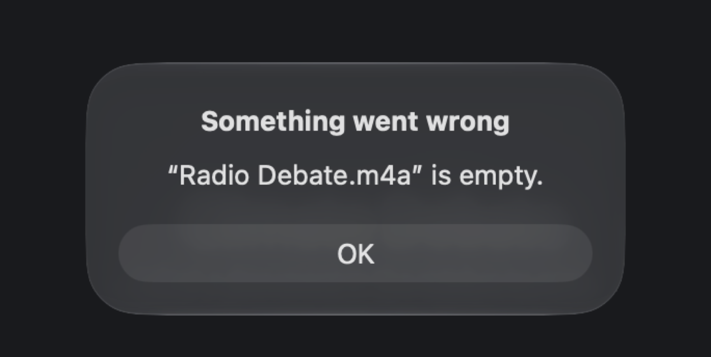
The Import Document dialog
All documents except web pages are imported using the dialog Import Document. Web pages are imported using the dialog Import from Web. PDF and web documents both receive a source preview at the top as well. While most properties can be changed afterwards via Document Properties, moving the document to another group can be done by right-clicking the document in the sidebar and selecting Move to Group. If you’re unsure of any property, skip it.
For instance, each of the eleven commentary texts within the example project “Climate Debate” contains data regarding each of the four attributes defined within the project. Each document has a publication date and belongs to either the “Print” or the “Online” group. Here “A Mayor’s Promise” is the first of six documents imported together. Its “Stance” and “Readership” fields are already filled in.
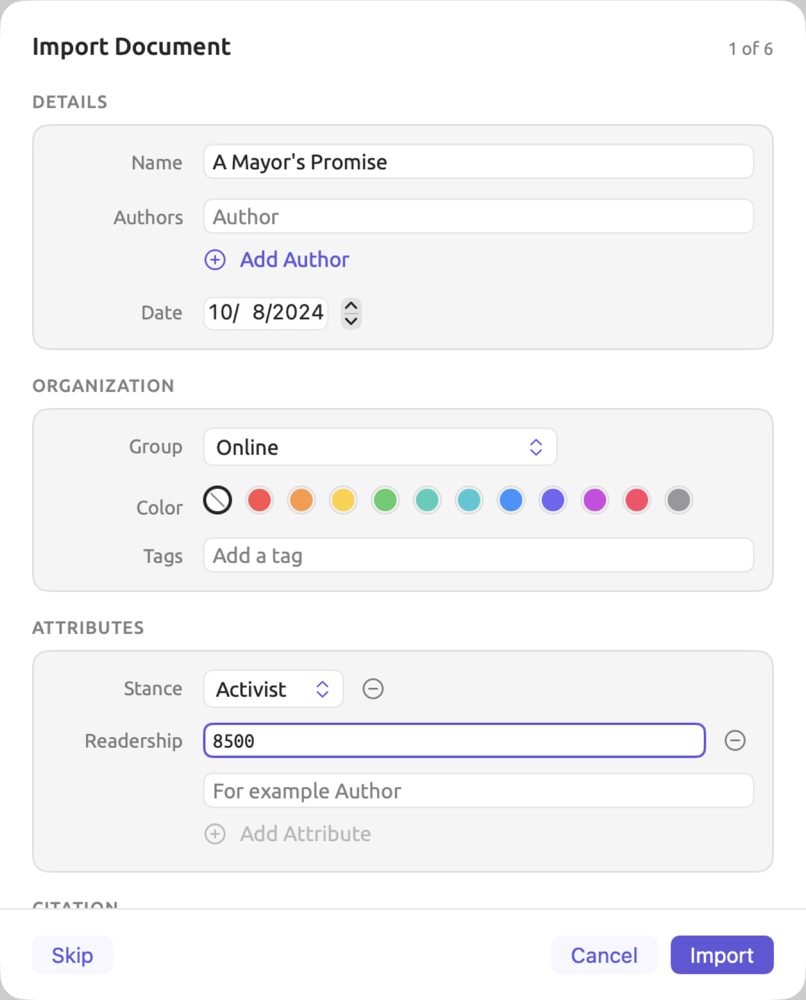
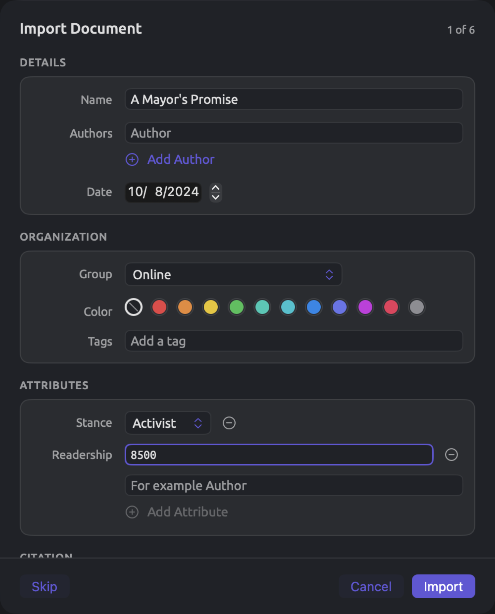
Details
Name is based on the file name without its extension. Running Out of Time.txt becomes “Running Out of Time”. The Name is displayed in the navigation sidebar, in tabs, and in every results table. When the Name field is left blank, the Import button stays disabled. Authors contains one entry per author. Click Add Author to add any additional authors.
Every document possesses a Date, which may also be queried and selected by smart sets. LemmaLoom determines Date automatically for PDFs and web pages when it can. For text files and media, the initial Date is the current date. A date attribute, e.g., “Publication Date”, is separate from Date. You provide “Publication Date” manually, for example when the document requires a second date.
Organization
Group places the document inside of one of the groups in the project, such as “Print”. Ungrouped leaves the document at the root level of the Documents section. Color changes the tint of the document’s icon in the navigation sidebar.
Tags can take as many tags as needed. Type in the tag and hit Return (or a comma). As you start typing, LemmaLoom provides suggestions for any previously used tags based on the one tag vocabulary that all your projects share. See Chapter 8, Sets, Groups, Tags, and Attributes.
Attributes
This is where the document receives its values for its attributes. Attributes are the variables describing properties of the whole document. Examples include an op-ed’s “Stance” and “Readership”.
- Type the name of an attribute in the field at the bottom of the section. As you type, LemmaLoom suggests attribute names from this project and your other projects. Each suggestion shows its type.
- If the project already has an attribute of that name, click Add Attribute. A row appears for it. Enter or choose the value there.
- If the name is new, choose a Type from Text, Integer (a whole number), Decimal, Boolean (yes or no), Date, or Picker (one of a fixed list of choices). For a Picker, also type the choices, one per row. Click Add Attribute and enter the value in the new row. The attribute itself is created for the whole project when you import.
Selecting a suggested name from another project means importing its type and choices as well. Deleting a row can be accomplished by clicking on its remove button found at the end of each row.
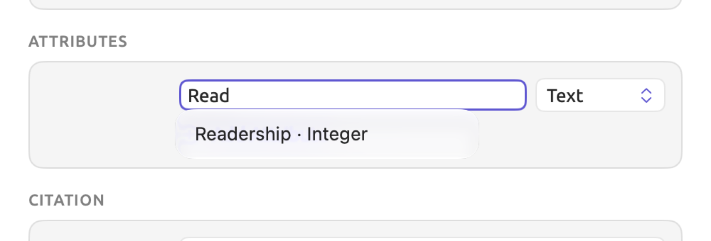
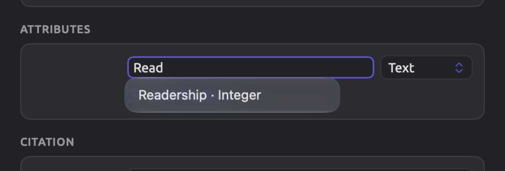
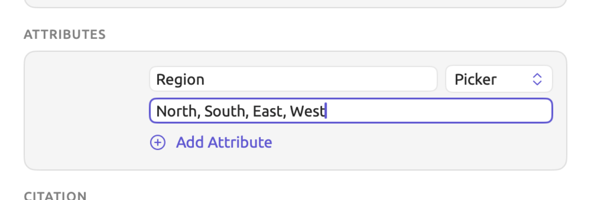
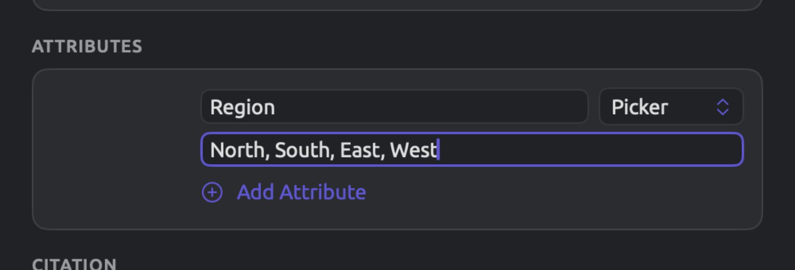
The dialog starts clean for each document file included in the batch process. Your grouping settings, colors, tags, attribute values, languages, analyzers, and exclusion patterns will be reset. To assign attribute values to multiple documents simultaneously, consider importing a spreadsheet afterward, as discussed in Importing attribute values from a spreadsheet later in this chapter.
Citation
If the source is published, bibliographic information should be entered in the fields labeled Publisher, Publication, URL, and DOI. Publication stores the name of the container in which the source has been published, such as the journal or website. Some fields may be automatically completed by LemmaLoom for PDFs and web pages.
Indexing
The last section contains Language, Index for grammar analysis, Analyzers, and Exclude from indexing. See Choosing the language, Analyzers and indexing, and Excluding text from indexing.
Choosing the language
Language determines which grammatical analysis will be performed on your documents. You can either choose English, German, or Chinese, or you can leave Language set to Automatic. With Automatic selected, LemmaLoom will identify the language based on the first 4,096 characters of the document (or several hundred words); with a recording, it bases the decision on the transcription. See How transcription works below in this chapter. When you choose English, German, or Chinese instead of Automatic, LemmaLoom skips the recognition step altogether.
With the Automatic setting, a German document starting with an extensive English summary may be indexed as English throughout, for instance. Manually specify the language for any document whose opening differs from the rest.
Documents in languages other than English, German, or Chinese are imported but stay unindexed. You can observe their index status on the reader’s status bar, where text like No grammar analysis for French shows this. You can still view and code them. To fix a wrong guess, set the correct Language parameter in Document Properties for LemmaLoom to re-index the document.
The language displays in the navigation sidebar next to each document as a two-letter language code (e.g., EN for English, DE for German). Hover your mouse pointer over these codes to get the actual name of the language used in the document.
Analyzers and indexing
Index for grammar analysis begins pre-checked. If you wish to read and code documents without grammar analysis, however, you may uncheck this checkbox, delaying the process until such time when grammar analysis becomes necessary. Once a document has been added in this manner, you will notice that the reader’s status bar shows Indexing is off for the document. To index it, click Index Now there or in its Document Properties dialog.
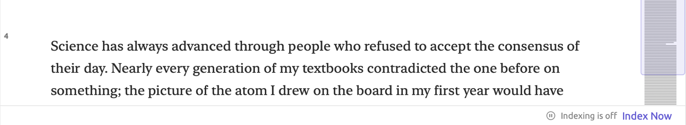
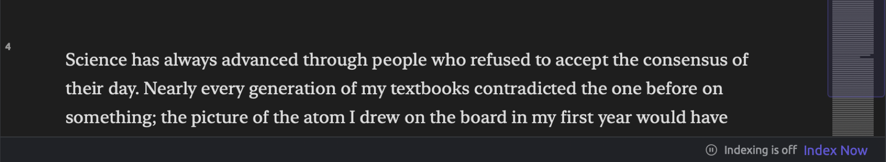
Analyzers lists what will run after a document’s indexing completes. Cohesion tracks each sentence back to previous sentences through ties such as pronouns and repetition of words. Metadiscourse tags words in speech and writing used to comment on statements made in the discourse itself. Such examples could be hedges, boosters, and connectives. Finally, Rhetoric analyzes the presence of the passive voice and other devices. Chapter 6, Lenses and Chapter 11, The Grammar Inspector visualize findings from these analyzers. Custom analyzers, written in Window ▸ Analyzers, follow directly afterward in the list. See Chapter 20, Custom Analyzers.
By default, with Language set to Automatic, LemmaLoom offers you the full list of available analyzers. Choosing a particular language will filter this list to the analyzers capable of handling it. Each of the analyzers is checked at first and will operate upon the document. Deselecting one skips it for this document; Document Properties can still run it later. Unchecking the Index for grammar analysis checkbox will disable everything in the list.
Excluding text from indexing
The problem with typed transcripts lies in the fact that they often contain extra text beyond whatever was said in the recording. These may take on many forms, such as time stamps enclosed in brackets, like [00:12:31]. They may be speaker labels such as Host: and Skeptic: which precede every turn in a transcript. Keeping such labels will increase the number of words. Imagine that a typed transcript of the “Radio Debate” were to prefix every turn with Host:, Activist:, or Skeptic:. Then the top three nouns in that transcript would be activist, skeptic, and host. This distorts keyword lists and word sketches. When generating its own transcripts from recordings, LemmaLoom preserves its speakers in the form of codes and transcript segments. See Speakers later in this chapter.
In order to avoid timestamps and labels in grammar analysis, use Exclude from indexing. This means that excluded texts will persist inside documents for reading and coding but be kept out of indexing and therefore grammar analysis.
You need to define what to exclude via a regular expression. Regular expressions are patterns that match entire families of text strings. If you’ve never made one yourself, start with the basic pieces below.
| Piece | Matches |
|---|---|
\d | any digit |
+ after something | one or more of it in a row |
\[ and \] | an opening and a closing square bracket (the backslash makes them literal) |
\. | a period (a bare . matches any character) |
\S | any character that is not a space |
? after something | that thing or nothing |
When looking at the pattern piece by piece, \[\d+:\d+:\d+\] starts off with an opening bracket. Then follow three sequences of one or more digits that are colon-separated. Finally, there is a closing bracket. This would match something like [00:12:31] or [1:05:09]. But the pattern does not account for anything with only a single colon, like [12:31].
In parentheses, the pipe symbol separates alternative possibilities. (Host|Activist|Skeptic): represents Host:, Activist:, and Skeptic:. Note that a pattern is case-sensitive; hence host: will not match the above pattern. If you wish to ignore capitalization, precede the pattern with (?i). On its own, the caret ^ character signifies the beginning of the entire string. The (?m)^(Host|Activist|Skeptic): pattern represents Host:, Activist:, and Skeptic: only if they occur at the beginning of lines.
To add a pattern:
- Type it in the field under Exclude from indexing. The line below the field shows an example of text it matches, Valid pattern if it has no example to show, or Not a valid pattern.
- Click Add, or press Return.
There is a Presets menu next to Add. The Presets menu provides pre-existing patterns:
| Preset | Pattern |
|---|---|
| Timestamps [hh:mm:ss] | \[\d+:\d+:\d+\] |
| Timestamps [mm:ss] | \[\d+:\d+\] |
| Speaker labels | Speaker \d+: |
| Web addresses | https?://[^\s\p{Han}\u3000-\u303F\uFF00-\uFFEF]+ |
| Email addresses | [^\s\p{Han}\u3000-\u303F\uFF00-\uFFEF]+@[^\s\p{Han}\u3000-\u303F\uFF00-\uFFEF]+\.[^\s\p{Han}\u3000-\u303F\uFF00-\uFFEF]+ |
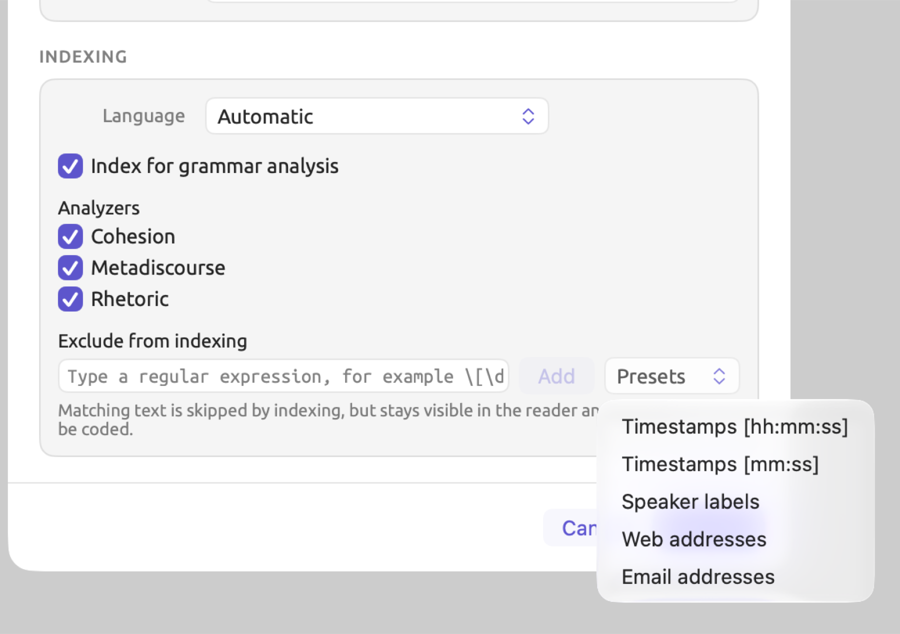

You can create your own presets based on patterns you frequently encounter. Open the General pane of Settings. In the Exclusion Presets area, click Add Preset, give your new preset a name, and enter its pattern. Your presets come after LemmaLoom’s default presets in the Presets menu.

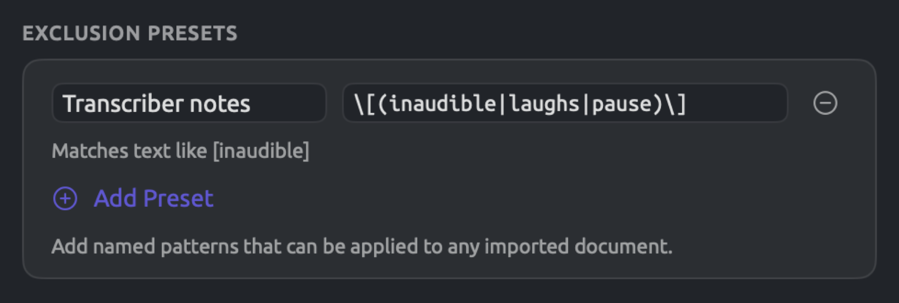
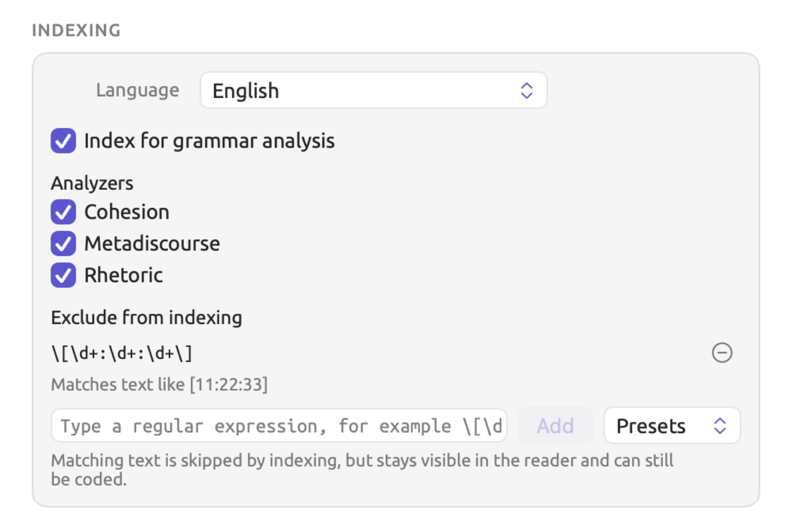
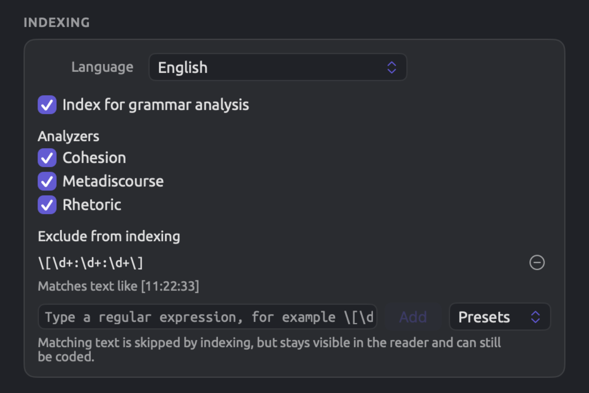
The patterns will be saved with the document itself. They may be edited later in the Document Properties dialog. Upon editing, LemmaLoom reindexes the document.
Text files
All text files with extensions such as .txt enter as-is. Other text-only files such as Markdown (.md), for example, enter in the same way, including any special characters like # and *.
LemmaLoom reads text files as UTF-8. A text file with an older encoding scheme than UTF-8, such as Windows Latin 1, may show up with accents replaced by � symbols. To fix this, re-save the file with a text editor using UTF-8 encoding and import it again.
Documents saved as either .docx or .doc must be exported from Word before importing. Export as plain text UTF-8 or PDF and opt for the former where possible since it retains your paragraphs intact. A PDF only retains information about each line of text in a page; thus, LemmaLoom will need to recreate the original paragraphs from the imported data. See How text is extracted later in this chapter.
RTF and HTML files can likewise be selected in the file dialog, being text files themselves. They retain all their formatting codes upon entering. Be sure to export an RTF document as plain text before importing into LemmaLoom. Web pages may be imported using File ▸ Import ▸ Web Pages.
It is up to LemmaLoom to discern between paragraphs within text files. Knowing the location of paragraphs matters for the paragraph numbers in the reader, as well as for queries that use the Paragraphs unit. First off, LemmaLoom considers whether blank lines are present. If there is any blank line, then only blank lines separate paragraphs. Single line breaks in documents with blank lines belong inside a paragraph. Without any blank line, every line is its own paragraph, so a transcript typed with one line per turn gets one paragraph per turn.
PDF documents
PDFs may contain actual text, scanned page images, or a mixture of both. Any text layer in the file is parsed directly, while any page without a text layer undergoes text recognition. The project then only keeps the text.
The PDF source preview
When importing a PDF, LemmaLoom first reviews the document before actually allowing you to do so. At this stage, the source preview displays Reading PDF while Import remains disabled. After review, the completed preview tells you the file name along with the total number of pages and word count in the text layer. For “Heat Wave Report 2024”, it would say 6 pages · 504 words. Pages without a usable text layer are counted separately (e.g., 2 pages need text recognition). The opening lines from the text appear below that.
Review the opening lines to ensure you have the correct file, and to make sure that readable text exists within the first few lines. Word counts are based on pages having a text layer; hence, the word count for “Heat Wave Report 2024” excludes two pages needing text recognition. Note, however, that the importation itself recognizes words on these pages and includes them in the document.
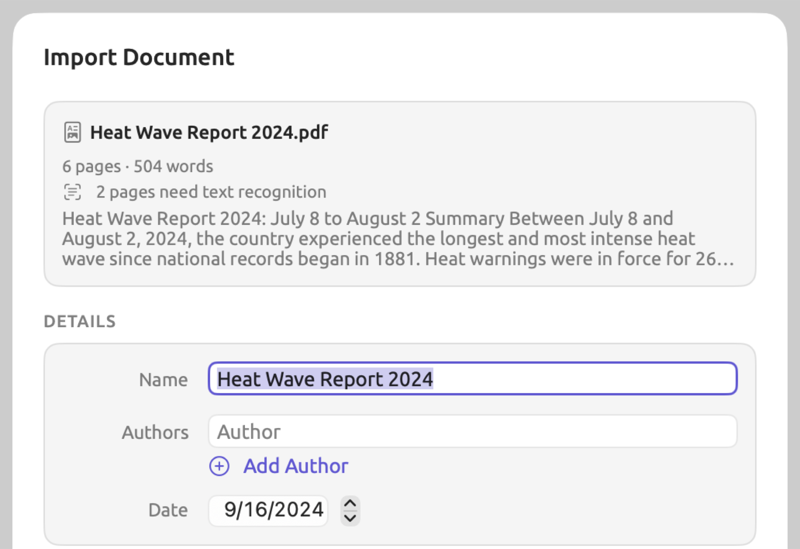
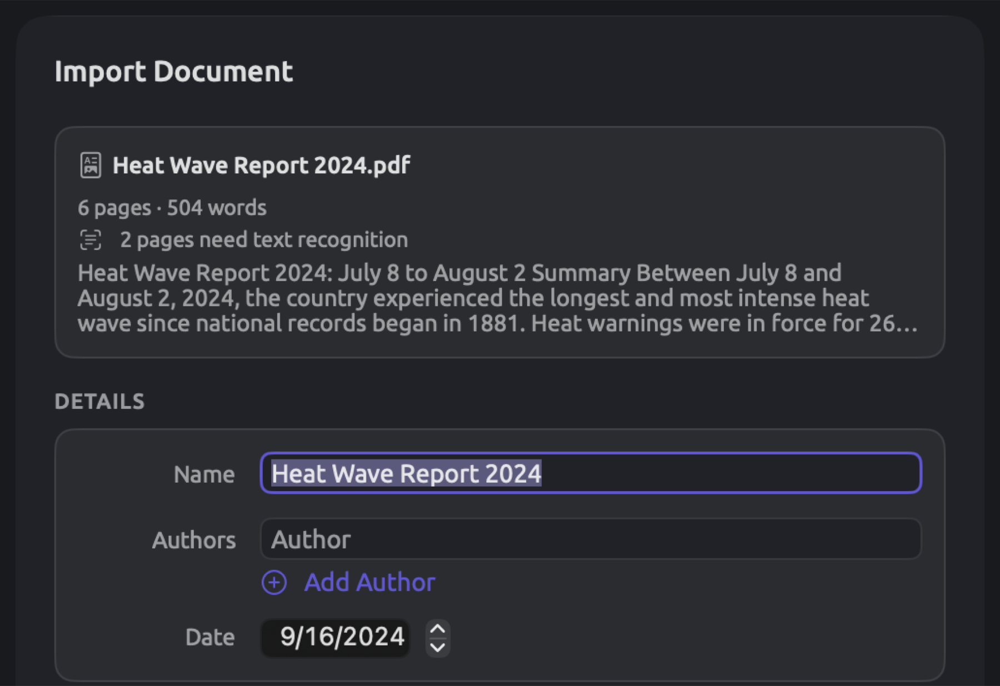
LemmaLoom extracts information from your PDF to populate the dialog. Name pulls the PDF’s title field unless it is a placeholder title or you have already changed the name. Titles that qualify as placeholders include “Untitled”, any filename with the extension .docx, and any title beginning with “Microsoft Word -”. Authors retrieves the authors’ names in the PDF’s author field. It splits multiple names at semicolons. Date captures the creation date in the PDF. DOI captures the first Digital Object Identifier found in the PDF’s subject field or on the first two pages with text in your PDF.
How text is extracted
When you click Import, LemmaLoom will process the PDF page by page, while the navigation sidebar row and the Activity window indicate Reading PDF with a percentage.
The text layer of each PDF page is tested before the page begins getting processed. A successful test requires at least 20 letters per page and a ratio lower than 1 unreadable character per 3 letters on average per page. An unreadable character refers to the kind that copies out as a box or �. If a page tests successfully, its text will be extracted line by line. Anything else is treated as a scan. A scan is rendered into images for text recognition, which often commits errors in cases where scans are not very high-quality or contain many tables. Compare results with the original.
A PDF only knows about lines. LemmaLoom recreates paragraphs based on the line structure. Lines that separate from each other vertically by a greater margin mark the start of a new paragraph. An indented opening line and a short line that ends a sentence will also mark the beginning of a new paragraph. Whenever the next line begins with a lowercase character, any hyphenation that ended the previous line gets eliminated. “Infra-” and “structure” will become “infrastructure”. Similarly, compounds split at their own hyphen have those hyphens stripped away; “long-” and “term” turn into “longterm”. Pay attention to instances like this. A paragraph may also continue onto the following page should the next page start with a lowercase character and the previous page end without terminal punctuation. In Chinese text, no spaces separate lines that get joined together.
Page numbers and running heads are detected and stripped from documents. Running heads refer to titles that recur repeatedly throughout the document at the top or bottom of each page. Instances in the form of short paragraphs at the heads or feet of pages can be running heads. Such cases will qualify as a running head if the same text repeats itself on at least 40 percent of the pages. Numerical digits and capitalization do not affect this comparison. Therefore, “Heat Wave Report 2024, page 3” and “Heat Wave Report 2024, page 4” will count as identical text. On six pages total, “Heat Wave Report 2024” qualifies as having a running head if the same text occurs on at least 3 pages out of 6. LemmaLoom finds that 40 percent of 6 equals 2.4, rounding up to 3 pages. Page numbers appearing alone (“12”, “iv”, “Page 12”, “Seite 12”) get stripped from the heads and feet of every page.
Text flow follows the order established in the PDF, meaning lines may be ordered incorrectly relative to each other due to multiple-column pages and tables. Footnotes and captions might also disrupt text order in this way. Review the results for inconsistencies in reading order and fix them where needed. For instructions, see Chapter 5, Reading and Editing.
Web pages
The imported document is just the article on the web page and not the navigational elements, advertisements, or comments surrounding it.
Importing a web page
“Carbon Tax Debate” is a news piece in “Climate Debate”, imported from the web. Its web address is preserved in URL.
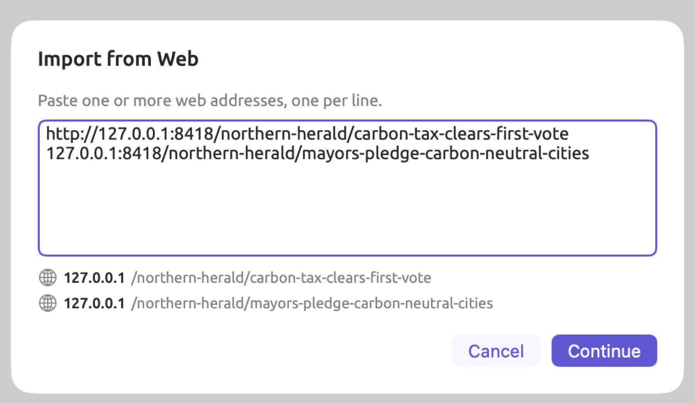
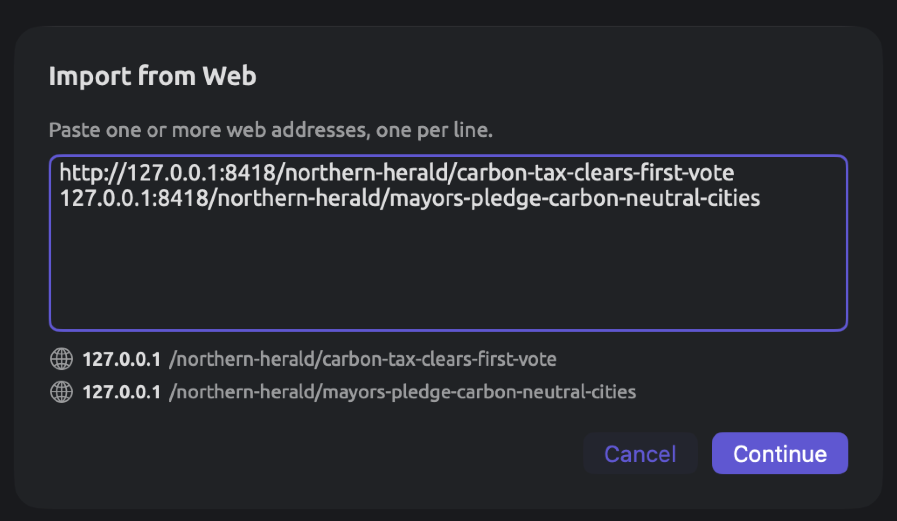
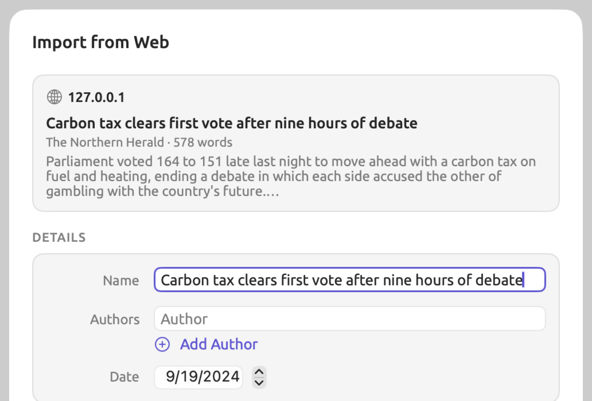
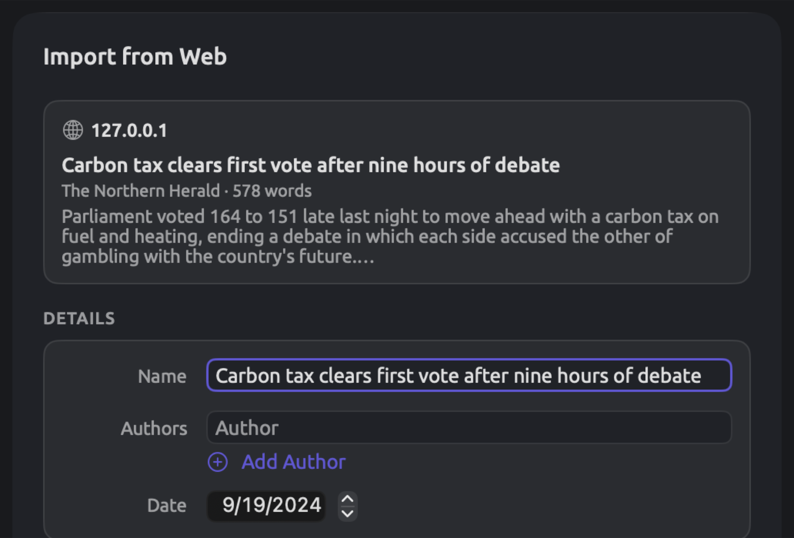
To import a web page:
- Select the project in the sidebar.
- Choose File ▸ Import ▸ Web Pages (⌥⇧⌘I).
- Paste one or more web addresses into the Import from Web dialog, one per line. Below the field, LemmaLoom lists the addresses it recognized. It adds
https://where it’s missing and lists a repeated address only once. - Click Continue.
- A second Import from Web dialog opens for the first address. As LemmaLoom loads the page and extracts the article, the source preview shows Fetching page and then Reading article.
- Once the preview shows the article, check the title and the site. Check the word count and the opening lines too. Then fill in the rest of the dialog.
- Click Import. If you entered several addresses, the dialog opens again for the next one. It has Skip and a counter, as for files.
How LemmaLoom reads a page
When LemmaLoom imports a web page, it loads the page in a private browsing session. LemmaLoom will scroll to the end of the page once and wait briefly, to extract the text that loads on scrolling. LemmaLoom then extracts the article.
In the article document, the text appears in reading order. Any images, videos, forms, and embedded content get stripped away. Every heading, paragraph, list item, and table cell becomes a paragraph in the document. A first paragraph that merely repeats the title is removed.
The source preview provides metadata regarding the word count and name of the site. The article title is included, followed by any description of the article that exists in the page itself. If no summary exists in the page itself, then the initial text is provided instead.
The import dialog will only fill up missing fields with the available data from the page. Name gets filled with the article title. Authors become whoever is listed as author on the page. Publication becomes the name of the website, while URL becomes the page link (or the page’s own preferred address). Date is the exception here; if the publication date is stated explicitly in the page, that becomes the date regardless of what you had put earlier.
Audio and video
LemmaLoom accepts recording files of any format your macOS computer understands how to decode. For audio recording formats, these include MP3, M4A, WAV, and AIFF; for video recordings, MP4 and MOV formats are accepted. LemmaLoom transcribes the speech in the recording and automatically assigns speaker codes accordingly. Additionally, a copy of the file is kept for playback at any point while reading the transcript.
Should you wish to attach a pre-existing transcription to its recording, both can be imported at once as part of a REFI-QDA project. More information can be found in Importing a REFI-QDA project in Chapter 22, Exchanging and Exporting. Imported alone, a transcript is a text file without playback.
Importing a recording
In LemmaLoom, “Radio Debate” from “Climate Debate” is an imported audio file featuring three speakers, namely, a host, an activist, and a skeptic. Its transcript is linked to the recording, so any passage can be played back as you read it. The speakers are kept as codes.
To import an audio or video file:
- In the sidebar, select the project.
- Choose File ▸ Import ▸ Documents (⇧⌘I).
- Select the recording and click Open.
- In the Import Document dialog, check the name and fill in the details. Leave Language at Automatic.
- Click Import.
There is a row at the end of the Documents section representing the recording; a waveform symbol represents an audio file whereas a film strip icon represents a video. If you hover your mouse pointer over the row, you’ll notice a tooltip with information about the currently active step. Alternatively, check the Activity window.
| Step | What happens |
|---|---|
| Preparing | LemmaLoom copies the file into its library and reads its length. |
| Extracting audio | The sound track is read and prepared for transcription. |
| Downloading speech model | The first time Apple Speech transcribes a language, its speech model is downloaded. A percentage shows the progress. |
| Transcribing speech | The speech is written down. A percentage shows the progress. |
| Identifying speakers | The voices are told apart and each sentence is given to a speaker. |
Once all steps are completed, the newly generated document replaces the row entry, and the indexing phase commences. Transcription time varies according to your particular machine; import just one file to get a rough estimate prior to importing many files.
Recording files require audio tracks; files lacking these cannot be imported, displaying instead a message stating The file has no audio track to transcribe. Empty files return messages naming the file, e.g., “Radio Debate.m4a” is empty.
How transcription works
LemmaLoom can transcribe speech in English, German, and Chinese. The transcription model listens to the initial 30 seconds to determine which language your recording is in, then transcribes everything in that one language.
Chinese transcriptions are rendered using simplified characters.
There are three models you may use. To change your current transcription model to any of these three, select your choice of Model under Transcription on the General pane of Settings. The default model is Apple Speech and the quickest. Compared to Whisper Large v3, Whisper Large v3 Turbo is somewhat quicker yet perhaps slightly less accurate on hard files. Chinese-language recordings are transcribed solely via Whisper regardless of which model you’ve selected, Apple Speech included. Any alteration of the model impacts future transcriptions alone.
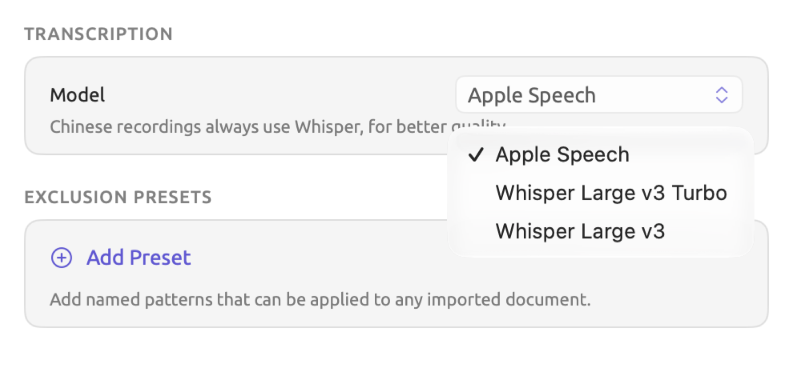
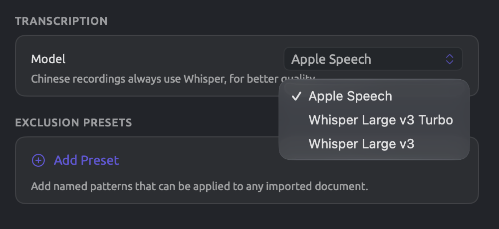
Names, terminology, dialect, multiple voices speaking simultaneously, and background noises tend to produce errors in speech recognition software most often. Prior to proceeding with coding, review the transcript while listening to the recording, editing errors accordingly. See Chapter 5, Reading and Editing. When editing, your codings, transcript segments, and additional annotations migrate with your edits.
Speakers
After the transcripts of your audio and/or video files are created, LemmaLoom identifies voices and codes them based on who is speaking in each sentence. Once a second or third (or more) voice is detected, the sentences are assigned to their respective voices, and those speakers are labeled “Speaker 1”, “Speaker 2”, etc., according to how early each speaker starts talking in the conversation.
LemmaLoom will automatically generate a code named “Speakers”, with subcodes for each voice applied to their turns. Each turn represents a series of sentences spoken by a single person consecutively. Each subcode receives its own color and is assigned to every turn by its speaker. Codes here belong solely to one document. See Chapter 7, Coding.
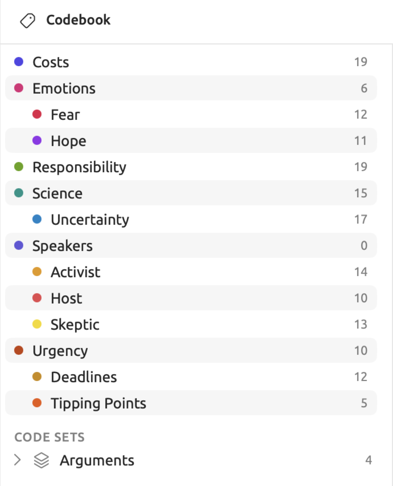
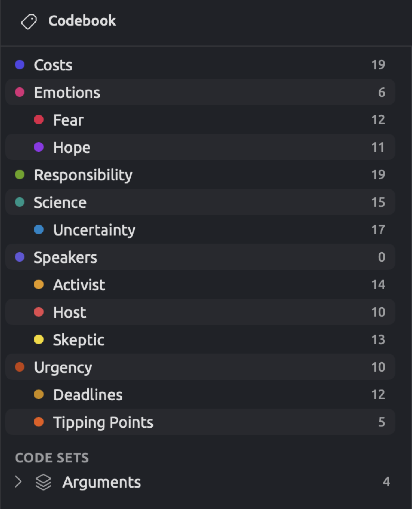
The “Radio Debate” is used again in the example below. In it, the host talks first, followed by the activist, followed by the skeptic. If you imported a file where the host came first, followed by the activist, and then the skeptic afterward, your “Speaker 1” code will refer to the host, your “Speaker 2” code will refer to the activist, and finally, your “Speaker 3” code will refer to the skeptic. Afterward, you would rename the three codes to “Host”, “Activist”, and “Skeptic” respectively in the codebook. In the example project, the “Radio Debate” already has named speakers in its codes and transcript segments.
Speaker detection only has the voice itself to detect from. Similar-sounding voices and short interjections can confuse this process. The overlapping of multiple voices and background sounds can also disrupt this process. On occasion, the detection process may split one voice into two different speakers. Compare your speaker codes with the actual recording. Recode any section attributed to the incorrect speaker. When a voice becomes split between two speakers, merge the speaker codes back together. Where there is only one voice detected in total, no speakers or speaker codes get added at all.
Transcript segments
Transcripts consist of segments, typically one per sentence. Every segment contains the start time and end time for the segment, and its speaker when more than one voice is detected. Your transcript text is organized according to these segments. When two consecutive sentences belong to the same speaker, they are kept together within the same paragraph. However, if the speaker switches or pauses beyond 1.5 seconds, a new paragraph starts.
Segments link text with recording. Segments give information to the player telling which part of the transcription is currently playing. Additionally, you can move directly to any part in a transcript. Queries can operate on segments via the Speaker Turns unit. See Chapter 15, Building a Query. The Speaker Turns unit holds an item for each segment. A turn of five sentences translates to five items. Items contain the fields Speaker, Start, End, and Duration.
Playing recordings
Open a recording document, and the player bar appears directly above your text, as seen in Chapter 5, Reading and Editing. This player bar contains controls for playing a recording, time positions, and information on who spoke the current passage being listened to. When dealing with indexed documents, clicking a word will take the player to the beginning of that particular word’s segment. While indexing a document, which happens again after you edit it, moving around in the player is done solely through the slider.
To the right of play, the Scroll with audio button enables scrolling with playback. As you play a recording in the document, the reader shows the passage being played and keeps it in view. This button is initially off. Once enabled, it remains enabled for every recording until you disable it manually. Passages scrolled with audio can appear as Spotlight (default), Solid block, or Highlight. Under Audio Playback on the Reader pane of Settings, choose the appearance of passages scrolled with audio.
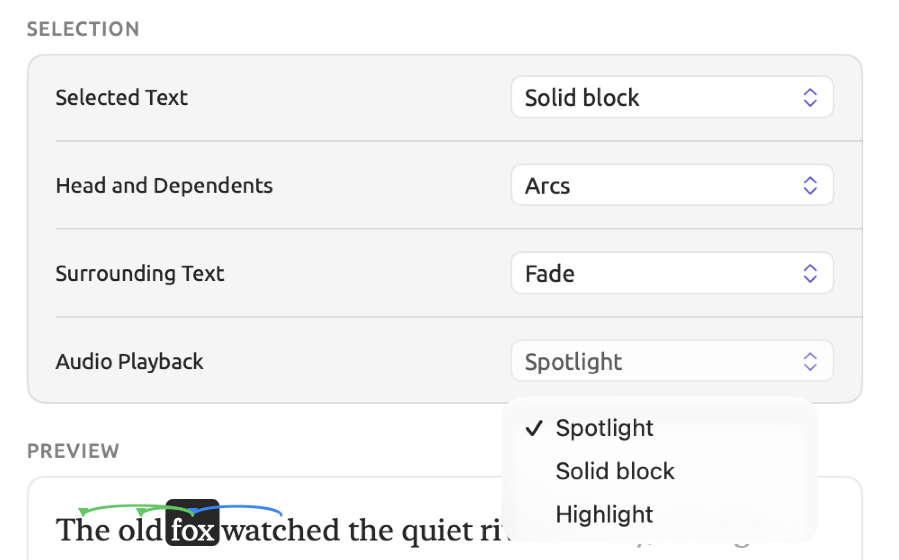
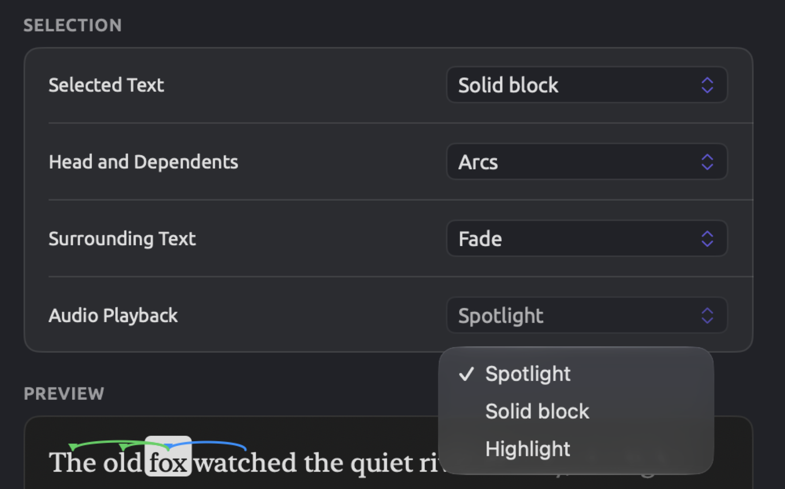
With videos, the viewer appears above the text. Resize the viewing area of a video using the divider located below it. The chevron button collapses the player down to its controls. Next to it, the video placement button switches a video between playing above text and playing to the left of text.
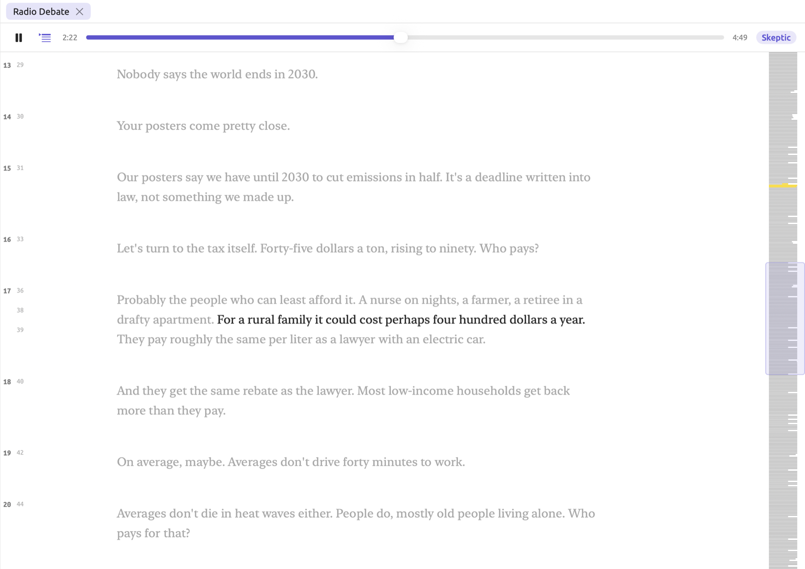
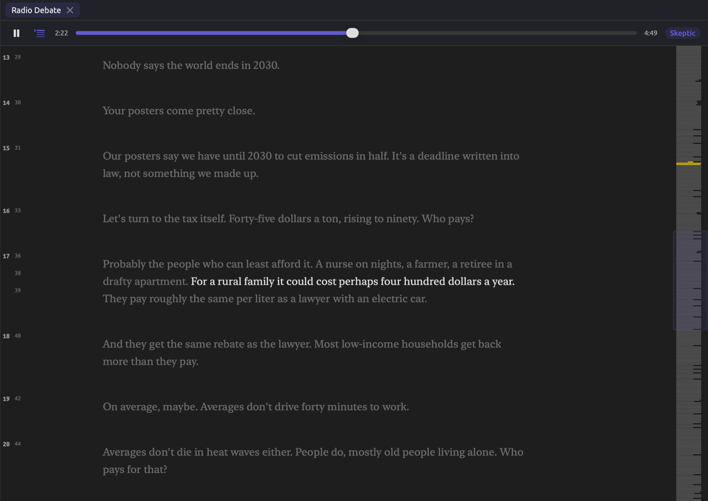
Where recordings are stored
All imported recordings are copied into the library and played from there. For more on the library, refer to Chapter 2, Getting Started. After importing has been completed, you may freely move or delete the original file. When you export your project into a LemmaLoom archive, the exported project retains all recordings within it. See Chapter 22, Exchanging and Exporting.
Importing attribute values from a spreadsheet
An attribute represents factual information about your document. Stance and readership are two examples. The outlet and publication date also fit. Refer to Chapter 8, Sets, Groups, Tags, and Attributes for their types and choices. Should you have these facts stored in a spreadsheet elsewhere, LemmaLoom will import them all at once, associating each row with a document based on its title.
Preparing the file
Export your spreadsheet as either tab separated or comma separated (CSV). Regardless of whether it’s tab or comma separated, there must be a first row of column names. One column should have the titles of each document, precisely as seen in the sidebar, though capitalization may differ. Additionally, each attribute gets a column as well.
A file for the “Climate Debate” texts could include lines like these:
Title,Stance,Readership,Publication Date,Outlet
Running Out of Time,Activist,412000,2024-08-21,The Northern Herald
Letter from the Climate Strike,Activist,186000,2024-09-02,Greenline Blog
Why We Block the Roads,Activist,41000,2023-11-14,Greenline Blog
The Models Keep Missing,Skeptic,96000,2024-03-12,The Weekly Ledger
The separator will automatically be calculated for you by LemmaLoom. Comma, semicolon, and tab separators will work fine. Whichever occurs most frequently on the first line gets used. If your spreadsheet program writes sep=; on the first line, LemmaLoom will follow that instruction as well. Values which include the separator go in double quotes. Files are capable of using UTF-8, UTF-16, and the old Windows/Mac character sets.
Dates should always be written 2024-08-21 (year-month-day). Dates frequently become localized to something like 8/21/2024 during spreadsheet processing. Make sure to format the date column as text prior to saving the file. Numbers need to use a point for decimals (7.5), rather than a comma. Do not write numbers with leading zeroes or thousand separators. 7 and 412000 are valid; 07 and 412,000 are not.
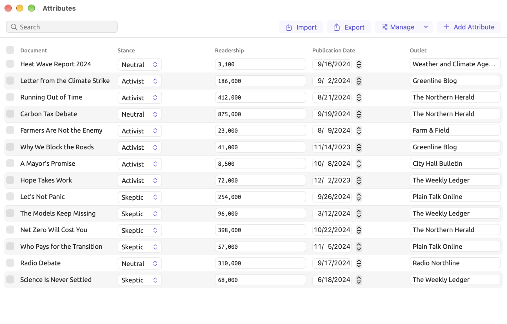
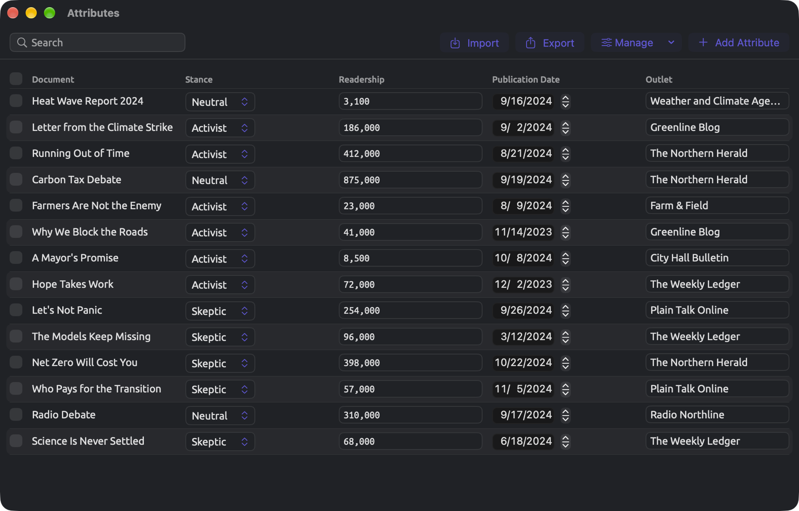
Running the import
- Select the project in the sidebar and choose Project ▸ Attributes, or right-click the project and choose Attributes.
- Click Import in the Attributes window.
- Choose the CSV file and click Open. The Import Attributes dialog opens.
- In Document, check the column that holds the titles. LemmaLoom picks the column that matches the most documents. Below the column, it says how many rows found their document (10 of 11 rows matched, for example).
- Under Attributes, go through the columns. For each one, choose the attribute it fills, New Attribute, or Skip. For a new attribute, check the Type too.
- Click Import. LemmaLoom writes the values and closes the dialog.
In the undo history, the import takes place as a single transaction. Edit ▸ Undo Import Attributes (⌘Z) reverts every attribute created and every value written during the import process simultaneously.
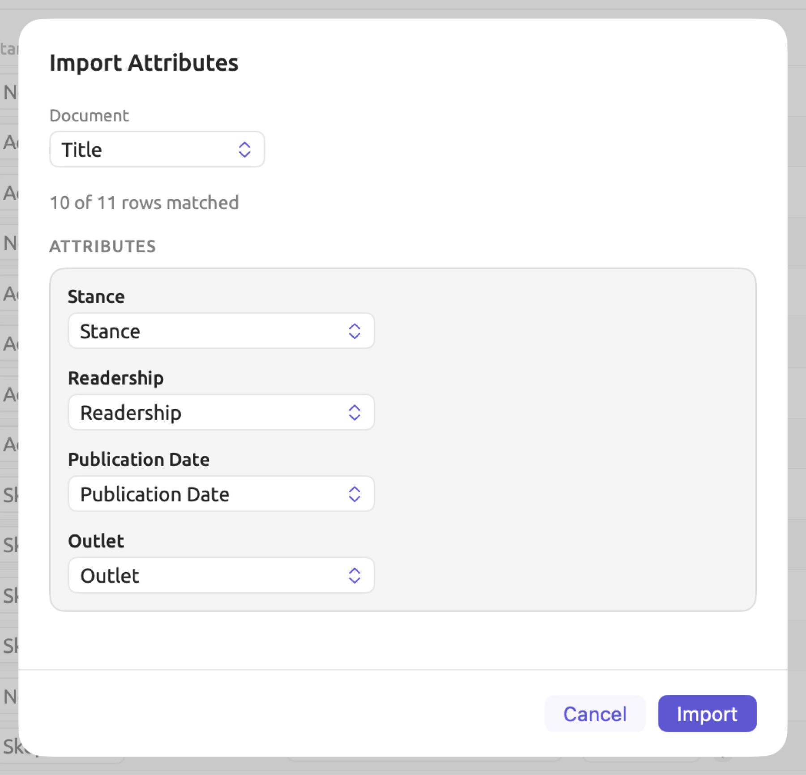
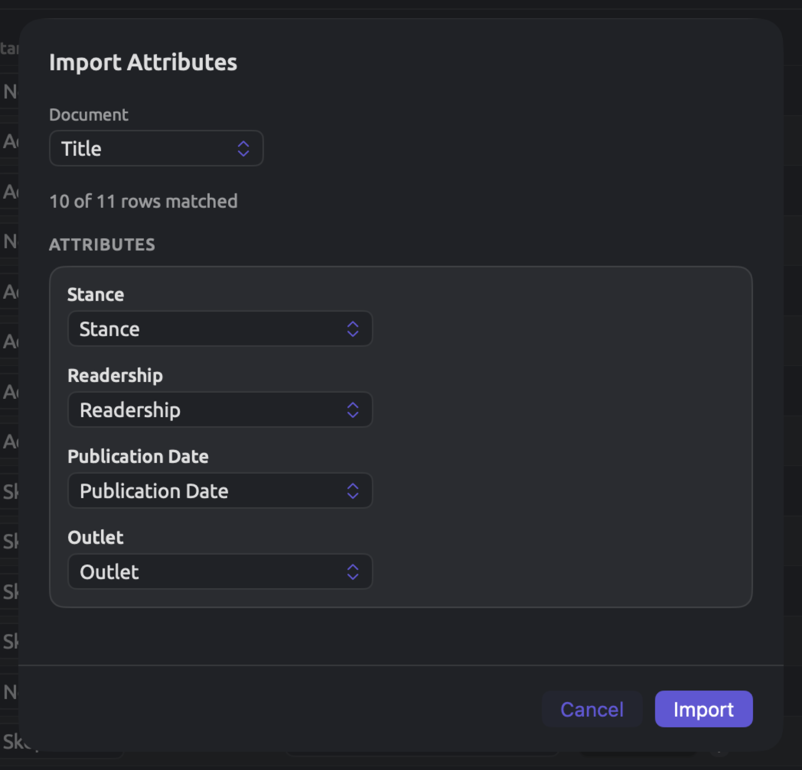
How rows bind to documents
When trying to match a document for each row, LemmaLoom checks the Document column of each row against the list of titles in your project, ignoring case sensitivity and leading/trailing whitespace on both ends. Any values written to an original document will be carried forward to its translations.
A row won’t match a document if its title isn’t listed anywhere within the project, or if multiple documents share that title. Also, multiple rows cannot refer to the same document; otherwise, none will be kept.
In the example file provided, there are eleven rows under the headings. Ten out of eleven rows match the documents correctly. However, the “Lets Not Panic” row does not have a match. The document has the title “Let’s Not Panic” instead (the difference being an apostrophe mark before “s”). This is indicated by the dialog reporting 10 of 11 rows matched. Rename the document or correct the file, then import again.
How columns become attributes
Each column starts with a default assignment. If the column’s heading matches the name of an existing attribute (disregarding case sensitivity), then the column is assigned to fill this attribute. Columns without headings, or values, are assigned the value Skip; all others will be assigned New Attribute, which will attempt guessing its data type based on its values.
| If every value is | The type is |
|---|---|
a date written as 2024-08-21 | Date |
true, false, yes, or no | Boolean |
| a whole number | Integer |
| a number, at least one of them with a decimal point | Decimal |
| one of at most 12 different values, at least one of which occurs more than once | Picker |
| anything else | Text |
The guess skips all empty cells. Be sure to examine your guessed types carefully prior to importing. If you were working in a project with no attributes, the example file would provide “Stance” with a Picker type, since its two values, “Activist” and “Skeptic”, each repeat. “Readership” becomes an Integer type while “Publication Date” becomes Date. “Outlet” becomes another Picker. The eleven rows list six outlets, which repeat sometimes. Should you anticipate that additional outlets will be freely added later on, you should choose Text for “Outlet”; the project “Climate Debate” uses this strategy.
Each value in a cell is assigned individually to documents while ignoring empty cells. An empty cell leaves the existing value untouched. Non-empty cell values overwrite whatever value the document currently has. Value assignment is skipped whenever the value doesn’t match the type of the attribute in question, and the dialog counts this in the column’s row (1 skipped, etc.). With “Readership” as the Integer type, cells containing “about 400,000” are skipped. Boolean attributes accept 1, 0, yes, no, true, and false as values.
In a Picker, every value not among the existing choices results in adding another choice. If a new value matches an existing choice aside from capitalization, it’s considered equal to the choice. Whenever an attribute used to construct a smart set gains new values, the set updates. “Wide Reach” (“Readership” at least 100,000), for instance, is one such smart set.
The Activity window
The Activity window will tell you everything going on behind the scenes in LemmaLoom with regard to your projects. Activities include imports, translations, and indexing activities. To view this, choose Window ▸ Activity (⌥⌘0).
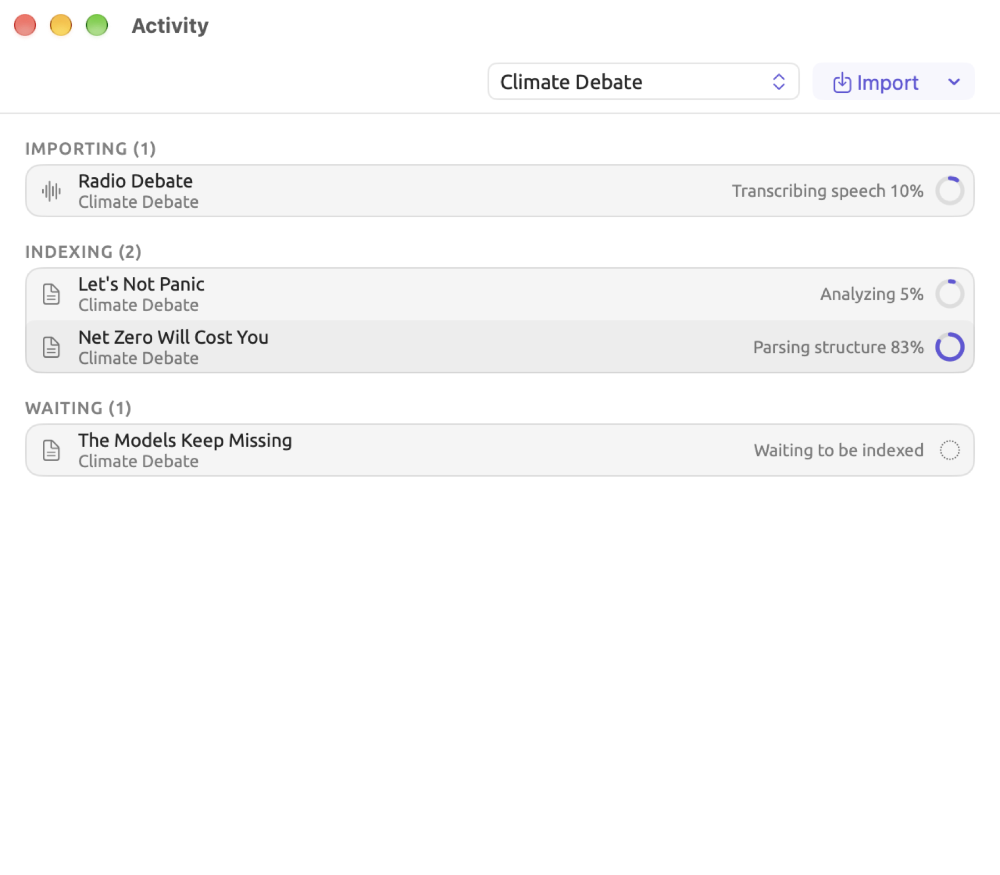
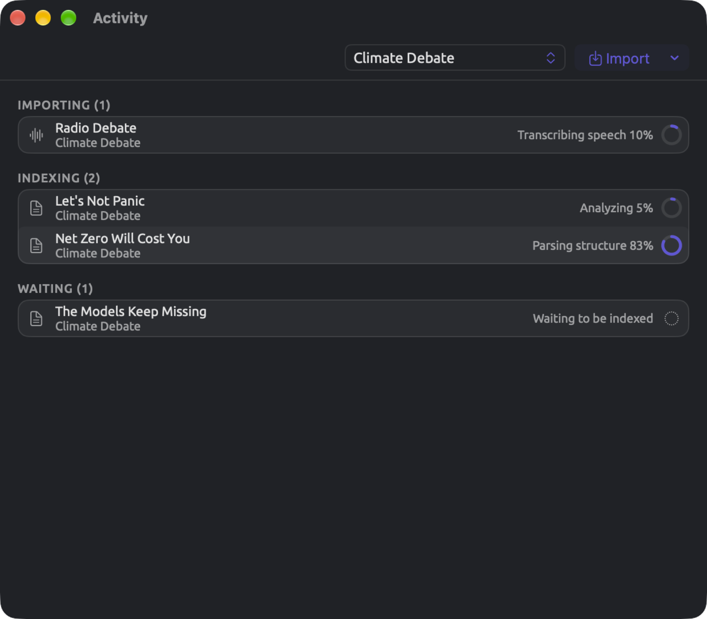
Sections contain different parts of your work. Each section displays its number of items in parentheses:
| Section | What it lists |
|---|---|
| Importing | Recordings being transcribed and PDFs being read, with their current step; REFI-QDA and archive imports, such as Importing LemmaLoom Archive; files and web addresses whose import dialog has not been confirmed yet, shown as Waiting |
| Exporting | A REFI-QDA or archive export under way, such as Exporting LemmaLoom Archive |
| Translating | Translations being made or waiting to start |
| Indexing | Documents being indexed, with the step and a percentage, such as Parsing structure 35%, or an analyzer at work, such as Running Cohesion |
| Failed | Documents whose indexing failed and translations that failed, with the reason |
| Waiting | Documents in the queue for indexing, shown as Waiting to be indexed |
Status, names, and project names appear in each row. Ongoing work will display a progress ring (or spinner icon) at the end of the row. Pending work will instead show a dotted circle at the end of the row. If indexing was unsuccessful for a document, a Retry Indexing link will be displayed instead. Unsuccessful translations will show a Retry link.
At the top of the window, the toolbar includes its own Import menu, which breaks out Documents and Web Pages. There is also the menu showing the project’s name, such as “Climate Debate”. Both allow importing into any selected project, regardless of which project the main window shows. Dialogs for imports will open up in the Activity window.
After import
Once a document joins your project, LemmaLoom begins indexing. Deselecting Index for grammar analysis upon import prevents the indexing from occurring. The indexing splits texts into sentences and words before determining their dictionary forms and parts of speech. Then comes grammatical parsing of the sentences, followed by the analyzers, and finally computation of statistics of the whole document. Please refer to Chapter 21, Analysis and Indexing for details.
These processes happen in the background. You may continue your workflow without interruption while the indexing happens. The performance depends on the hardware specifications of your Mac computer and the size of your documents. Indexing interrupted by quitting LemmaLoom continues the next time you open the application.
You can open, read, and code a newly imported document right away. However, functions that depend on indexing must wait until it is done before being functional. The lens menu’s text styling relies on the results of grammatical parsing; therefore, the lens menu is disabled until indexing finishes, with the tooltip Lenses become available when indexing completes. See Chapter 6, Lenses. The Grammar tab of the inspector displays the message Grammar becomes available when indexing completes until indexing finishes. Likewise, the Text tab shows Statistics become available when indexing completes until completion. Queries concerning words take account of indexed texts. Clicking a word to move the recording requires completed indexing.
The reader’s status bar tracks the indexing progress with messages such as Parsing structure 35%.
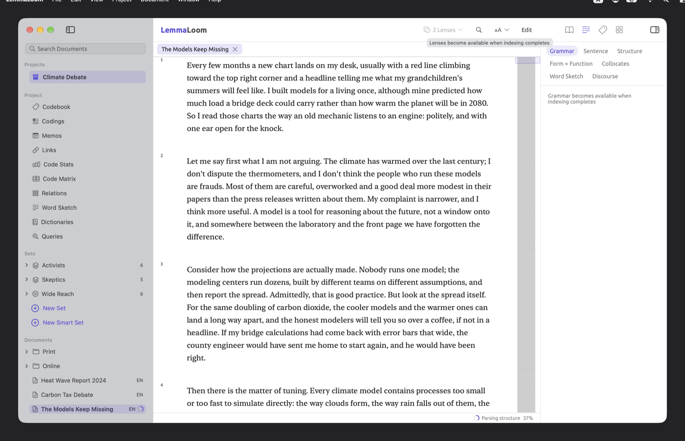
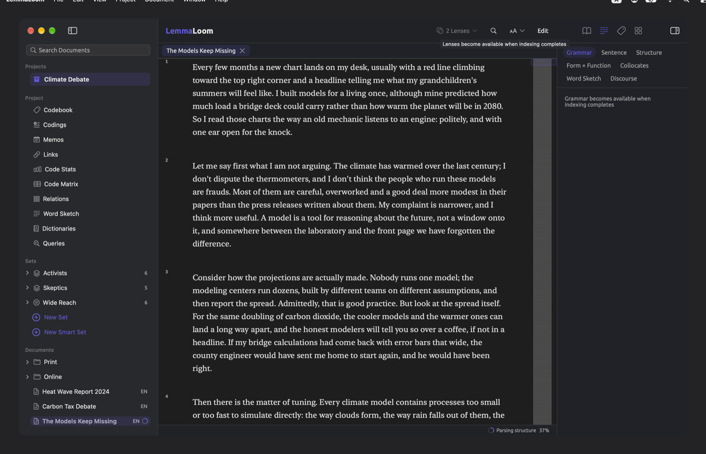
Similarly, the sidebar monitors indexing progress as well. Badges beside each document show how far along its indexing process is, as detailed in The navigation sidebar in Chapter 3, Projects and Documents. Hover your mouse pointer over the badge to get an explanatory message regarding the current indexing process stage and percentage. Should the process fail for some reason, both the sidebar’s document shortcut menu and the reader’s status bar show why and display the Retry Indexing command.
In particular, editing a document’s text and changing its language trigger automatic re-indexing. Changing exclusion settings for indexing also triggers re-indexing.